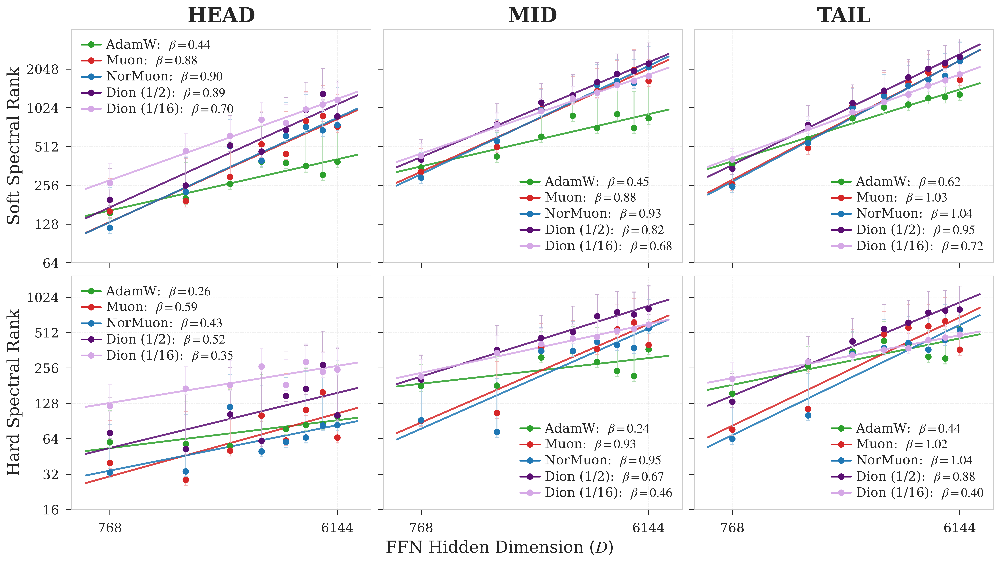
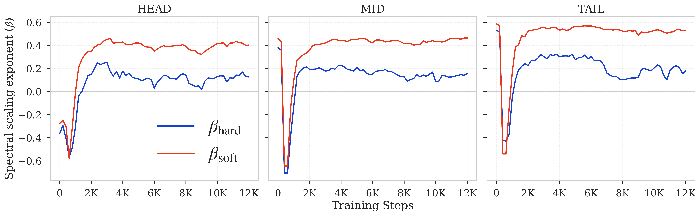
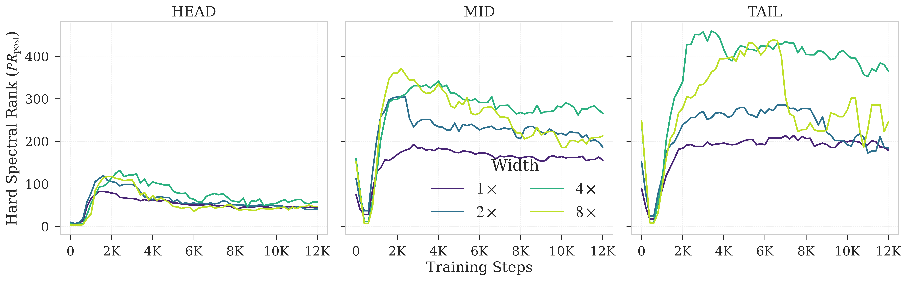
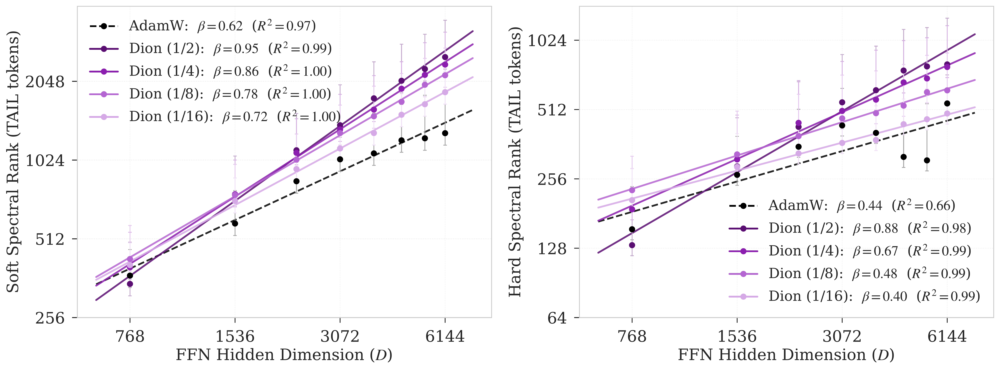
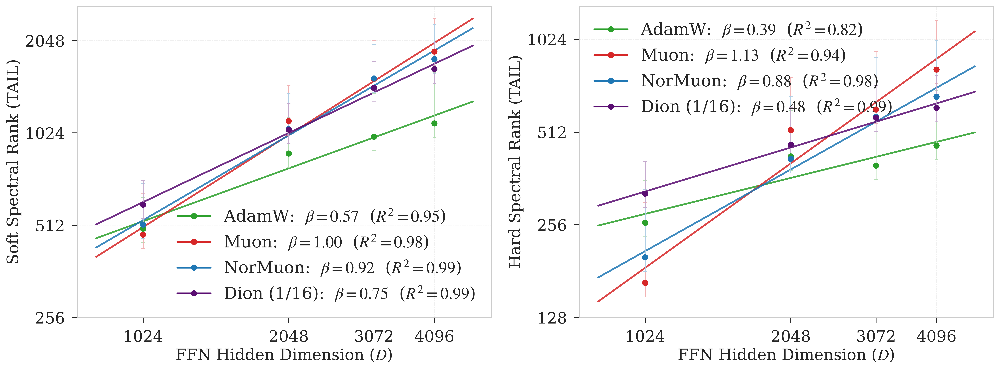
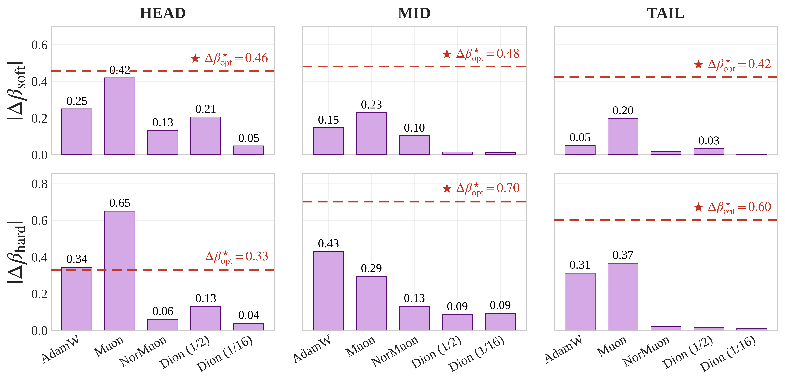
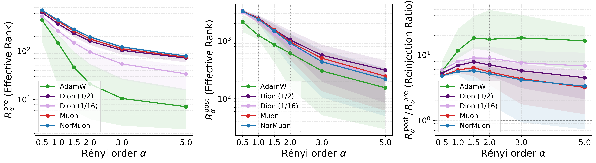

Realized representation capacity is not architecture-only; it emerges from the architecture–optimizer interaction. Optimizer geometry changes the scaling exponents that govern how FFN width becomes usable capacity. In controlled comparisons, optimizer-induced shifts in spectral scaling exceed architectural interventions.
The same Transformer architecture realizes different spectral-capacity scaling laws under different optimizers.
Soft rank grows across optimizers, but hard-rank scaling reveals whether added FFN width becomes dominant usable capacity or diffuse spectral mass.
Runs with similar validation loss can exhibit sharply different hard-rank scaling and representation structure.
MID and TAIL tokens expose the strongest optimizer-induced capacity shifts, showing that optimizer geometry changes how capacity is allocated across the token distribution.
In controlled comparisons, switching optimizers shifts spectral-scaling exponents more than attention-rank or positional-encoding interventions.
Scaling laws have made language-model performance predictable from model size, data, and compute, but they typically treat the optimizer as a fixed training detail. We show that this assumption misses a fundamental axis of representation scaling: how effectively the optimizer converts added FFN width into utilized spectral capacity. Using eigenspectra of feed-forward network representations, measured through soft and hard spectral-ranks, we find that the same Transformer architecture realizes markedly different spectral scaling laws when trained with different optimizers. Holding architecture and width schedule fixed, AdamW exhibits weak hard-rank scaling (β=0.44) on rare-token (TAIL) representations where learning is known to be hardest, whereas Muon achieves linear scaling (β=1.02) in the same regimes, a 2.3× increase in the scaling exponent. This difference is not reducible to validation loss: AdamW configurations can match low-rank Dion variants in perplexity, under extended training, while exhibiting sharply different spectral geometry, demonstrating that matched loss does not imply matched representation structure. Hard–soft rank asymmetry further reveals that optimizers differ not only in how much capacity is realized, but also in how that capacity is structured across eigenmodes. To disentangle optimizer effects from architectural ones, we compare against architectural interventions (e.g., attention rank and positional encoding), and find that optimizer-induced spectral shifts often exceed the architectural effects. These results suggest optimization as a first-class axis of representation scaling, motivating optimizer–architecture co-design.
Why stratify by token frequency? Aggregate spectra can be dominated by frequent token occurrences, potentially obscuring how lower-frequency regimes use capacity. We therefore split representations into HEAD, MID, and TAIL regimes, motivated by the long-tailed structure of language and prior work showing that LLMs struggle with long-tail knowledge (Kandpal et al., 2023), as well as token-frequency/Zipfian scaling analyses (Kunstner & Bach, 2025).
Main result: MID and TAIL tokens expose the clearest optimizer-dependent scaling differences. Muon/NorMuon nearly eliminate hard–soft asymmetry in these regimes, while AdamW maintains positive asymmetry across all token-frequency regimes.

Takeaway: MID and TAIL regimes show the clearest optimizer separation. AdamW maintains positive hard–soft asymmetry, while Muon/NorMuon drive this asymmetry near zero for MID and TAIL tokens. Figure 2: Soft and hard spectral ranks as functions of FFN width for HEAD, MID, and TAIL tokens in GPT-2 160M.
| HEAD | MID | TAIL | |||||||
|---|---|---|---|---|---|---|---|---|---|
| Optimizer | βhard | βsoft | Δ1,2 | βhard | βsoft | Δ1,2 | βhard | βsoft | Δ1,2 |
| AdamW | 0.26 | 0.44 | +0.18 | 0.24 | 0.45 | +0.21 | 0.44 | 0.62 | +0.18 |
| Muon | 0.59 | 0.88 | +0.29 | 0.93 | 0.88 | −0.04 | 1.02 | 1.03 | +0.01 |
| NorMuon | 0.43 | 0.90 | +0.47 | 0.95 | 0.93 | −0.02 | 1.04 | 1.04 | +0.00 |
| Dion (1/2) | 0.52 | 0.89 | +0.37 | 0.67 | 0.82 | +0.15 | 0.88 | 0.95 | +0.07 |
| Dion (1/16) | 0.35 | 0.70 | +0.35 | 0.46 | 0.68 | +0.22 | 0.40 | 0.72 | +0.31 |
Table 2: β values for soft and hard ranks for GPT-2 160M. Positive Δ1,2 indicates concentrated eigenspectra; lower values indicate better utilization of FFN width.
TAIL hard-rank scaling: AdamW 0.44 → Muon 1.02, a 2.3× larger exponent.
MID hard-rank scaling: AdamW 0.24 → Muon 0.93, the largest absolute gain (+0.69).
Muon/NorMuon reduce MID/TAIL hard–soft asymmetry to approximately zero.
Extended AdamW training improves validation perplexity and matches the low-rank Dion control across the FFN-width sweep, but it does not recover representation scaling. Aggregate hard-rank scaling nearly vanishes, dropping from βhard = 0.29 at 6K steps to βhard = 0.03 at 12K steps, while hard–soft asymmetry grows from +0.37 to +0.55. Thus, loss can improve while the width-to-capacity scaling law breaks.
| Aggregate | HEAD | MID | TAIL | ||||||
|---|---|---|---|---|---|---|---|---|---|
| Configuration | βhard | βsoft | Δ1,2 | βhard | Δ1,2 | βhard | Δ1,2 | βhard | Δ1,2 |
| AdamW 6K | 0.29 | 0.66 | +0.37 | 0.26 | +0.18 | 0.24 | +0.21 | 0.44 | +0.18 |
| AdamW 12K | 0.03 | 0.58 | +0.55 | 0.13 | +0.28 | 0.17 | +0.30 | 0.18 | +0.35 |
| Dion (1/16) 6K | 0.50 | 0.74 | +0.24 | 0.35 | +0.35 | 0.46 | +0.22 | 0.40 | +0.31 |
Spectral geometry summary. AdamW 12K matches the low-rank Dion control in validation perplexity, but its hard-rank scaling nearly vanishes (βhard=0.03, R2=0.01), whereas Dion maintains reliable power-law scaling.
| Optimizer | d | 2d | 3d | 4d | 5d | 6d | 7d | 8d |
|---|---|---|---|---|---|---|---|---|
| AdamW 6K | 38.15 | 36.79 | 34.12 | 34.34 | 33.85 | 31.68 | 32.17 | 32.43 |
| AdamW 12K | 34.25 | 32.15 | 30.40 | 30.47 | 29.43 | 29.04 | 28.45 | 28.29 |
| Muon | 31.79 | 29.83 | 28.65 | 27.90 | 27.27 | 26.85 | 26.43 | 26.15 |
| NorMuon | 31.77 | 29.82 | 28.63 | 27.82 | 27.23 | 26.74 | 26.29 | 25.94 |
| Dion (1/2) | 32.06 | 30.19 | 28.96 | 28.28 | 27.67 | 27.16 | 26.83 | 26.51 |
| Dion (1/4) | 32.61 | 30.69 | 29.58 | 28.79 | 28.23 | 27.68 | 27.41 | 27.13 |
| Dion (1/8) | 33.21 | 31.34 | 30.19 | 29.51 | 28.94 | 28.53 | 28.22 | 27.89 |
| Dion (1/16) | 34.18 | 32.41 | 31.33 | 30.66 | 30.08 | 29.71 | 29.40 | 29.23 |
Perplexity control. AdamW 12K matches or improves over Dion r=1/16 across the FFN-width sweep, yet their spectral scaling laws differ sharply. Matched loss does not imply matched representation geometry.


Extended AdamW training improves loss but breaks hard-capacity scaling. Top: βhard weakens over training while βsoft remains comparatively stable, increasing hard–soft asymmetry. Bottom: Wider AdamW models peak early and then lose hard-rank capacity faster than narrower models, breaking the monotonic width–capacity ordering needed for a power-law fit.
Standard training logs would report healthy progress: perplexity keeps improving. Spectral telemetry reveals the hidden failure mode: realized hard capacity stops scaling with width.
Why Dion? Dion provides a controlled intervention: it varies the rank of the projected optimizer update while preserving orthonormalized-update structure. This lets us separate the effect of update geometry from update rank, and ask whether orthonormalization alone is sufficient.
Main result: Update rank acts as a hard-capacity bottleneck. As the Dion rank fraction decreases, TAIL hard-rank scaling drops sharply, while soft-rank scaling degrades more gradually.

Figure 4: TAIL-token spectral scaling under Dion rank sweeps. As the Dion rank fraction decreases from r=1/2 to r=1/16, hard-rank scaling drops from β=0.88 to β=0.40, approaching the AdamW regime. Soft-rank scaling degrades more gradually (0.95 → 0.72), indicating that low update rank primarily limits dominant-mode hard capacity rather than all spectral growth.
Orthonormalization alone is not enough. The optimizer must have sufficient update rank to convert added FFN width into dominant-mode capacity.
Why this matters: To test whether the optimizer-dependent ordering is tied to one model size, we repeat the TAIL-token scaling experiment at 350M using a coarser four-point FFN-width sweep as a scale-replication check of the denser 160M results.
The same qualitative ordering persists: Muon achieves near-linear TAIL hard-rank scaling (βhard = 1.13), NorMuon remains strong (0.88), while AdamW remains sublinear (0.39). Low-rank Dion r = 1/16 also remains in a lower hard-capacity regime (0.48).
TAIL βhard: AdamW 0.44 → 0.39, Muon 1.02 → 1.13, NorMuon 1.04 → 0.88, Dion 1/16 0.40 → 0.48.
Hard–soft asymmetry: AdamW remains positive (+0.18 → +0.19), while Dion 1/16 remains elevated (+0.31 → +0.27).

Figure 5: Optimizer-dependent TAIL spectral scaling persists at 350M. Muon and NorMuon maintain stronger hard-rank scaling than AdamW, while low-rank Dion 1/16 remains in a lower hard-capacity regime. This coarser four-point sweep serves as a scale-replication check of the denser 160M results.
Why this matters: Architectural changes are usually treated as the primary way to alter model capacity, while optimizers are treated as training details. We test this assumption by comparing optimizer-induced spectral-scaling shifts against a controlled architectural intervention: increasing per-head attention rank while keeping total parameter count fixed.
We reduce the number of attention heads from 12 to 6, which increases per-head attention rank at fixed total parameter count. We then compare the resulting architecture-induced change in spectral-scaling exponent against the optimizer-induced change under the original architecture.
Main result: Optimizer-induced gains exceed attention-rank-induced shifts in 28 of 30 comparisons. The only exceptions occur in HEAD hard-rank scaling. In MID and TAIL regimes, optimizer geometry produces the larger spectral-scaling shift.

Figure 6: Optimizer-induced shifts in spectral-scaling exponents compared with attention-rank architectural shifts. Red dashed lines show the largest optimizer-induced gain over AdamW in the original 12-head architecture. Bars show the magnitude of the shift caused by increasing per-head attention rank. Optimizer-induced gains exceed attention-rank shifts in 28 of 30 comparisons, with exceptions only in HEAD hard-rank scaling.
Architecture does not determine realized capacity in isolation. The effect of an architectural intervention is mediated by optimizer geometry, and in many regimes switching optimizers shifts representation scaling more than changing attention rank.
Beyond capacity scaling, optimizer choice determines which architectures are trainable in the first place. Muon-family optimizers train partial PostLN configurations at useful perplexity where AdamW diverges or collapses.
| Optimizer | PostLN-25 | PostLN-50 | PostLN-75 | Full PostLN |
|---|---|---|---|---|
| AdamW (lr=10−4) | 64.6 | 65.6 | 106.7 | × |
| AdamW (lr=3×10−4) | 41.9 | × | × | × |
| Muon | 28.7 | 30.1 | 40.9 | × |
| NorMuon | 28.7 | 29.9 | 32.8 | × |
| Dion (r=1/2) | 29.1 | 31.7 | × | × |
| Dion (r=1/16) | 30.7 | 34.7 | × | × |
Table: Validation perplexity for partial PostLN configurations in GPT-2 160M. × denotes diverged runs (PPL > 1000). NorMuon reaches PPL=32.8 at PostLN-75 where AdamW collapses to PPL=106.7.
Optimizer choice can expand or shrink the architecture search space: some architectural configurations that fail under AdamW become trainable under Muon-family optimizers.
Why Rényi effective rank? Soft and hard ranks are two anchor points of a broader Rényi family. By varying the Rényi order \(\alpha\), we can probe whether optimizer-induced capacity appears in weak eigendirections, entropy-weighted spread, or dominant spectral modes.
We measure pre-activation rank, post-activation rank, and nonlinear reinjection \(\rho_\alpha = R_\alpha^{\text{post}} / R_\alpha^{\text{pre}}\). The strongest optimizer separation appears before the FFN nonlinearity: AdamW enters the nonlinearity with a more collapsed precursor spectrum, forcing much larger compensatory reinjection than Muon/NorMuon.

Figure 7: Rényi-family view of optimizer-shaped spectral capacity in GPT-2 350M. Left: pre-activation rank. Middle: post-activation rank. Right: nonlinear reinjection ratio \(\rho_\alpha = R_\alpha^{\text{post}} / R_\alpha^{\text{pre}}\). The strongest optimizer separation appears before the FFN nonlinearity.
Large nonlinear reinjection is not necessarily beneficial. It can indicate that the optimizer produced a collapsed pre-activation geometry that the FFN nonlinearity must compensate for.
At high Rényi order \(\alpha = 5\), Dion \(r = 1/16\) has much lower pre-activation rank than Muon/NorMuon, yet its post-activation rank can slightly exceed them. This rank-order reversal shows why effective rank should be treated as a family of probes, not a single scalar.
Architecture provides available capacity; optimizer geometry determines how much becomes realized spectral capacity.
Architecture defines the static computation graph; optimizer geometry shapes the effective graph used during training.
Architecture imposes a hard structural bias; optimizer geometry imposes a soft dynamic bias over reachable solutions.
Goldblum et al., 2024; Wilson, 2025 on hard vs. soft inductive biasesIn our controlled attention-rank intervention, architectural effects are most competitive in HEAD hard-rank scaling, while optimizer-induced effects dominate MID/TAIL regimes. This suggests that rare-token capacity is not only an architecture problem; it is an architecture–optimizer co-design problem.
This paper extends a line of work on FFN representation geometry in language models: from nonlinear eigenspectrum dynamics, to spectral scaling laws under a fixed optimizer, to optimizer-induced scaling laws of realized capacity.
@article{jha2026optimizer,
title={Same Architecture, Different Capacity: Optimizer-Induced Spectral Scaling Laws},
author={Nandan Kumar Jha and Brandon Reagen},
year={2026},
url={https://arxiv.org/abs/2605.21803}
}